返回硬件项目索引
返回硬件项目索引雅迪电动车定位器
阅读项目文档 ↓针对雅迪app位置上报存在的蓝牙上报易断联和远程寻车连不上的问题，只做了基于LoRa通信的电动车寻位器。主要功能有：1.停车后自主上报停车位置2.上位机自主下发寻车指令，定位器的蜂鸣器鸣叫并且上传位置。项目由三个部分组成，分别是定位器本体，LoRa网关，以及上位机。为了延长续航时间，定位器与网关的LoRa模块均采用RxDutyCycle以降低功耗，代价是蜂鸣器鸣叫会有5s的延时。定位器本体也采用adxl传感器的静止中断来唤醒单片机，进一步减少功耗。上位机设置状态提示栏，方便了解命令执行状态。并且显示定位器电量和温度值，用于提醒可能的漏水和及时充电。
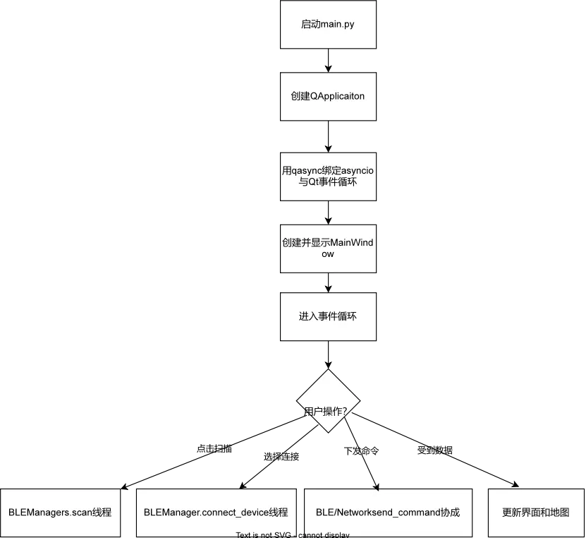

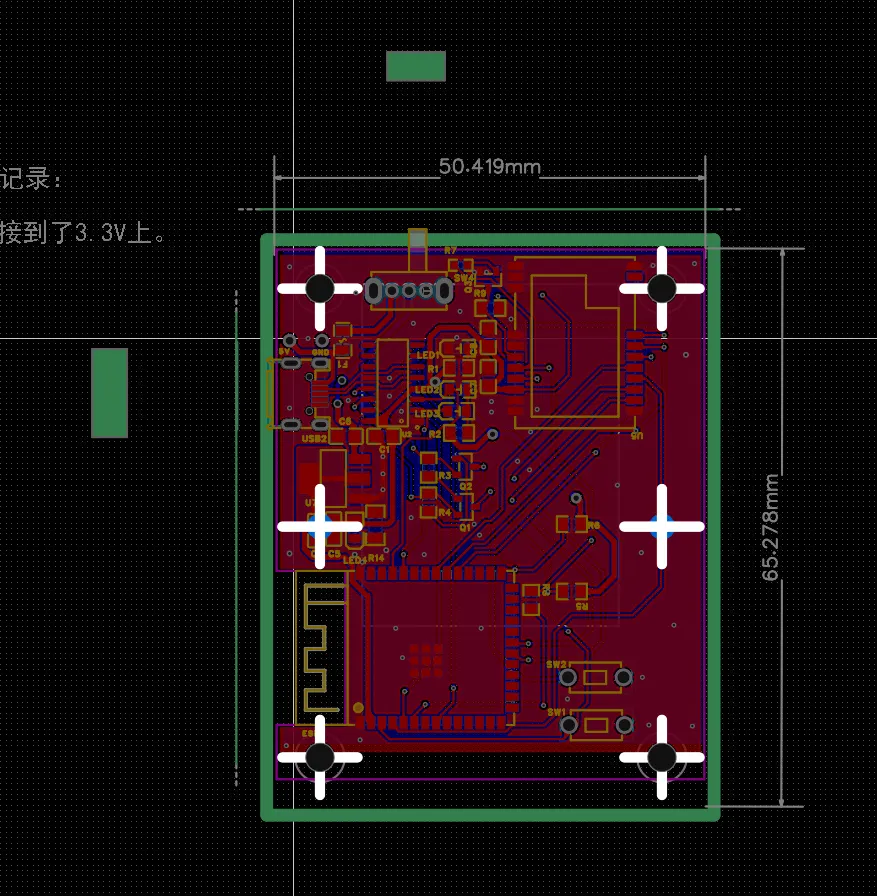
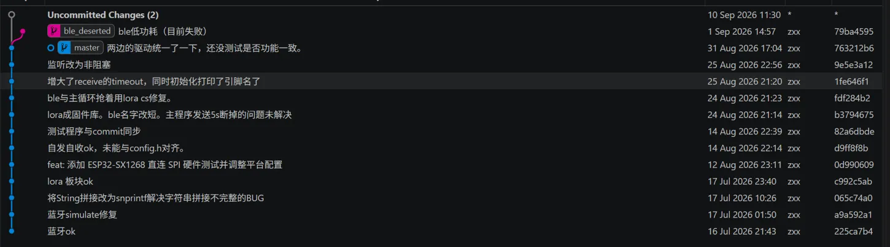
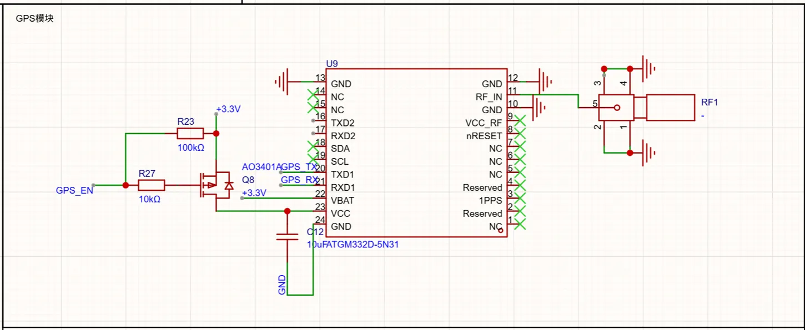
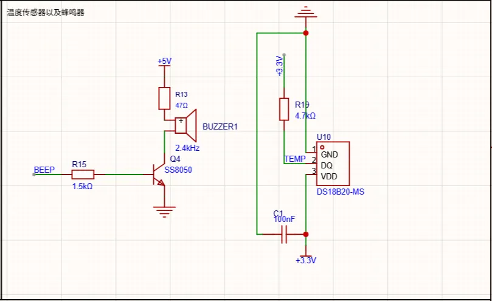
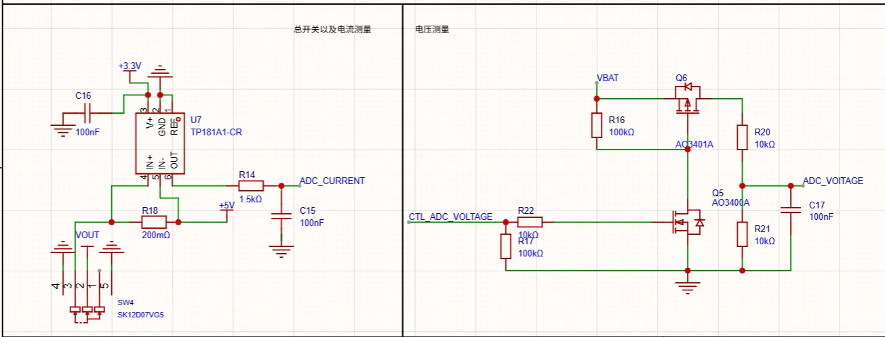
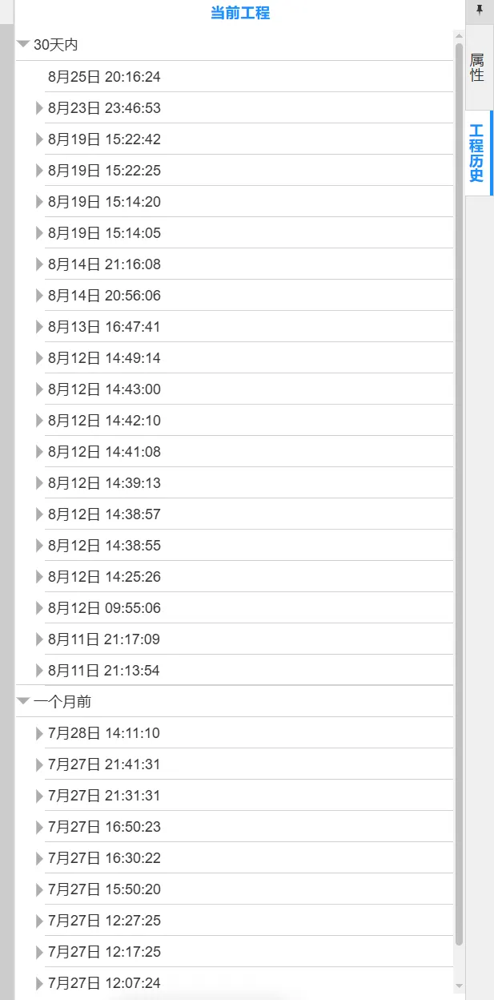
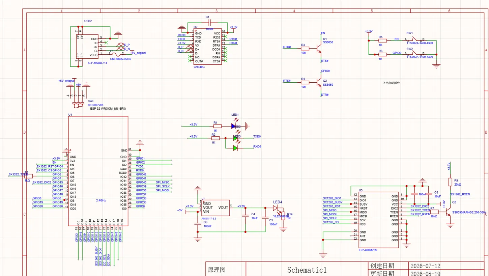
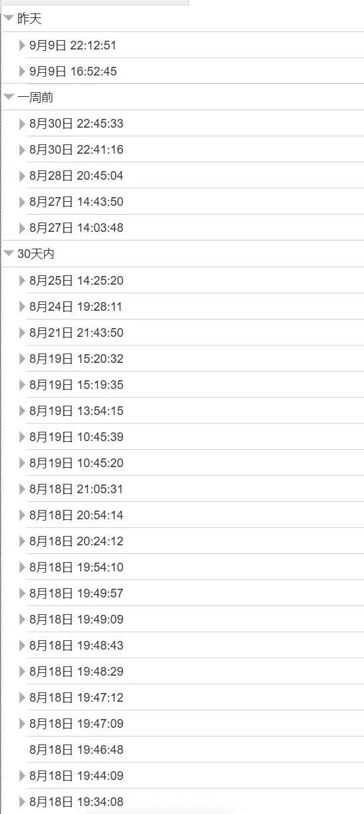
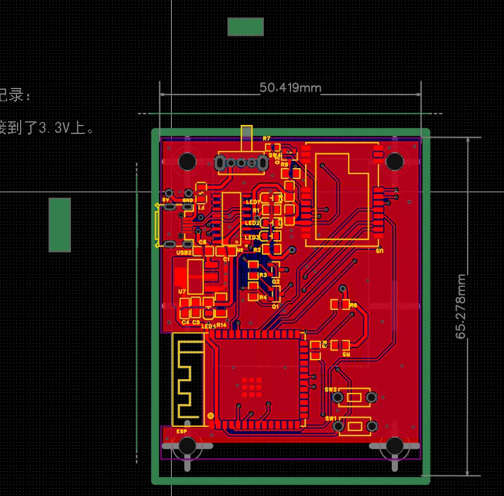
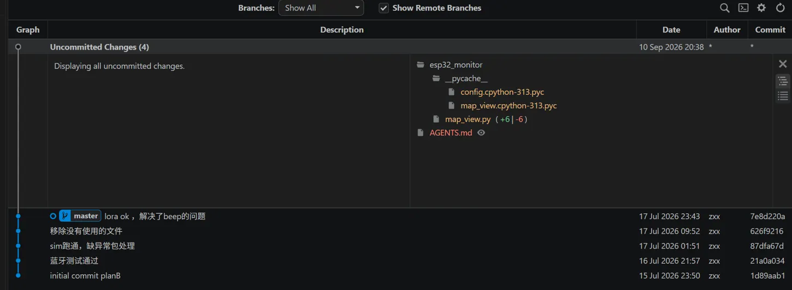
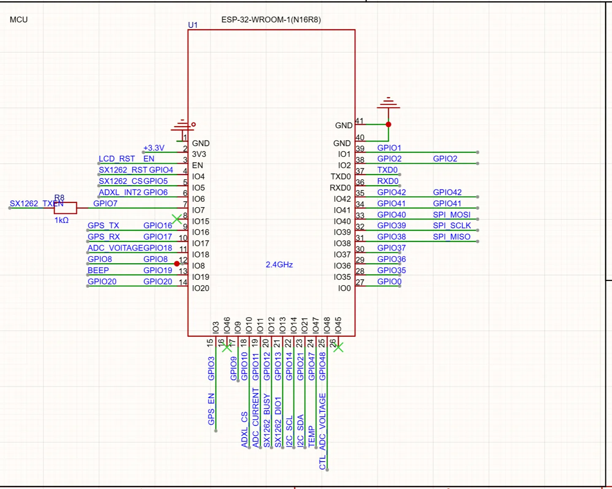
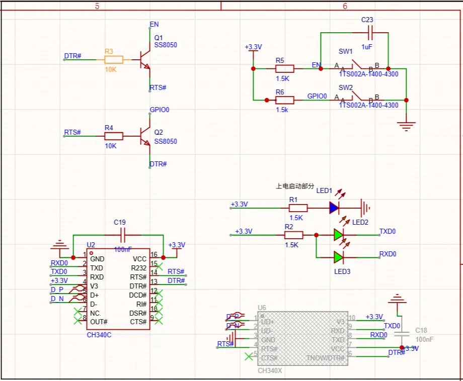
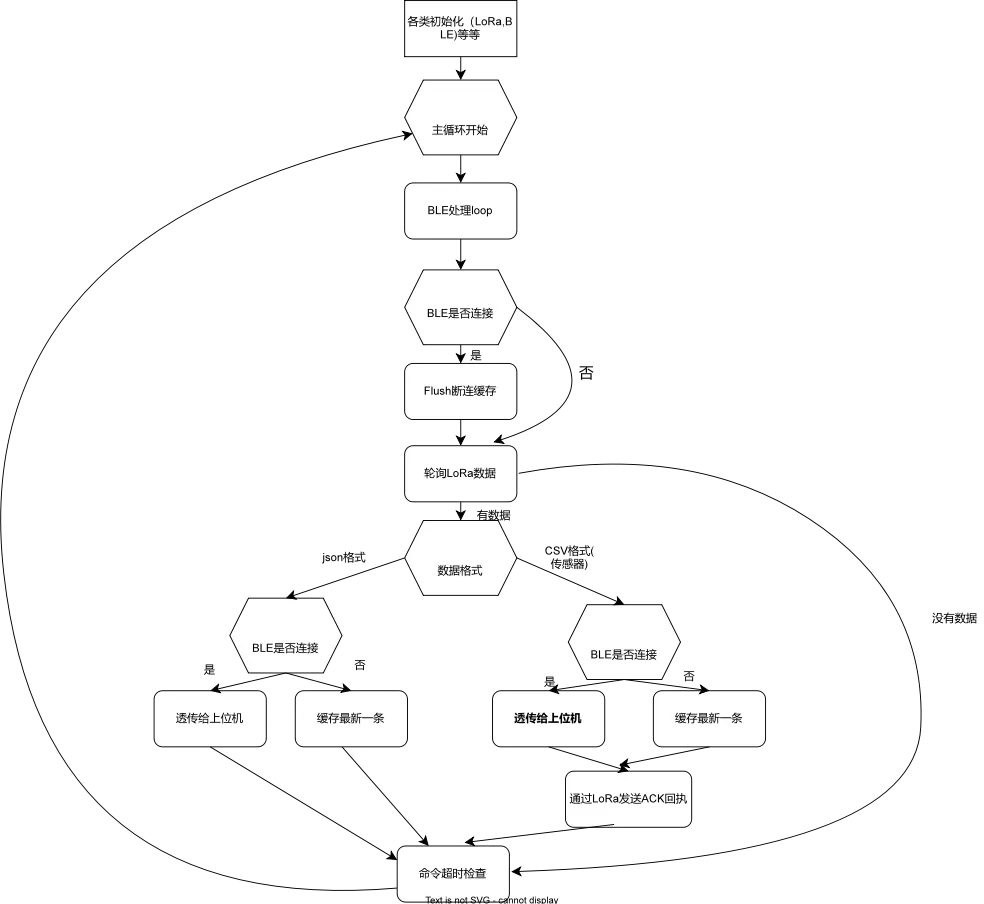
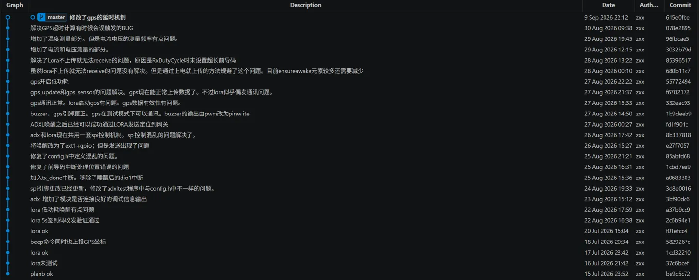
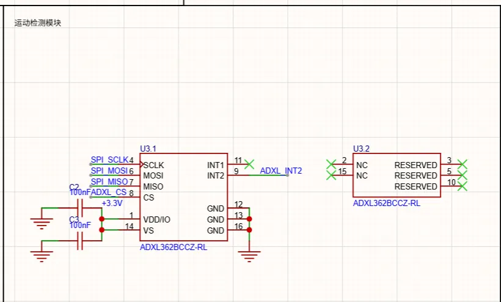

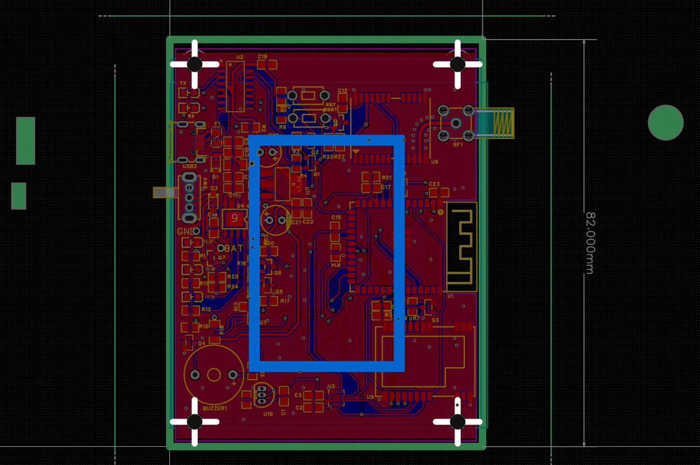
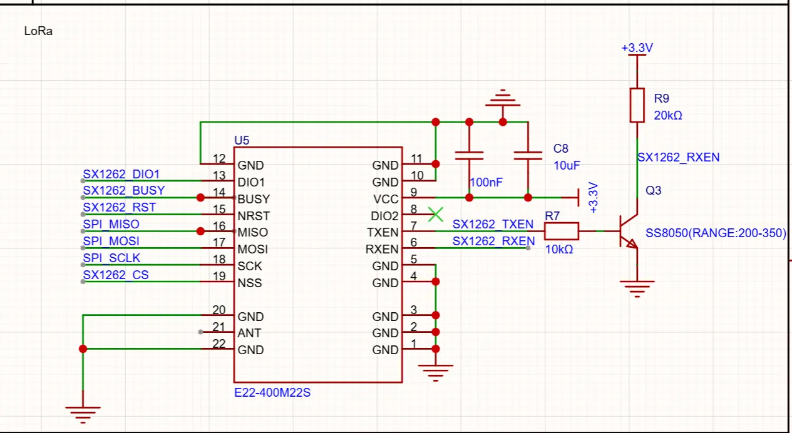
项目文档
项目介绍
项目介绍
项目概况
项目名称：雅迪电瓶车自动定位器
mentor：黄千格
项目简介
即简单功能介绍，可附图和视频加以说明
雅迪电瓶车自动定位器的功能有两个，一是电瓶车静止后自动上传目前位置。二是收到寻车指令后蜂鸣器鸣叫并且上报位置。
选型：
- 终端：ESP32 S3(N16R8）,E22400M(SX1268芯片)，ADXL362,DS18B20,FATGM
- 网关：ESP32 S3(N16R8), E22400M(SX1268芯片)
选型理由：ESP32是随便选的。LoRa是因为中国民用只能这个芯片。ADXL362是常见的低功耗检测运动芯片，并且有一个int2脚可以映射终端。DS18B20精度较高。GATGM GPS,低功耗并且有轻度睡眠的选项（可以保留上一次的星图）
视频注意看上传时间，用蜂鸣器测试在建筑群中可以达到200m的通信距离。视频中为了方便演示把定位器放在了身边。
第二个功能
第一个功能
---
项目成长
构建"迭代与改错"记录，可仅截屏展示
嵌入式代码
定位器
网关
上位机
电路原理图
电路模块原理说明
定位器
电源管理模块
USB2用于串口通讯。U8为LDO模块(体积更小)，后来发现电流过小，在初始化过程可能会引发ESP32重启，故后来换成了AMS1117。TP4056为充电芯片，两个LED一个代表充满电一个代表重在充电。中间的电路是为了电源管理，即采用电压更高的电源的供电。
下载代码电路
CH340C经典电路。原先采用CH340X是因为体积更小，但是用下来发现启动有问题，故换回来CH340C。
测量模块
左边为电流测量，通过放大器放大采样电阻的两端电压后通过esp32的adc引脚读取。右边为电压测量，做了低功耗处理，只有在adc_voltage为高的时候才会有电流流过右边的电路。并且对对电压做分压使其落到3.3V的范围里面。
运动检测模块
经典电路。ADXL_INT2引出接esp32，做ext1触发脚。
蜂鸣器以及温度传感器电路
ESP32
有遗留的LCD脚是因为第一版是MPU6050的高功耗版本。
GPS
GPS_EN出高GPS休眠。
LoRa模块
RXEN和TXEN做了反向处理。
网络名称写着SX1262实际上模块内部是SX1268。一开始设计的时候没有考虑中国允许的LoRa频段。现在是合法的。
网关
各个部分的介绍同定位器（由下载代码电路+LDO+ESP32+LoRa组成）
PCB
机械结构
无机械结构。
外壳由嘉立创打印，盖子与身体通过螺丝来连接
调试与迭代过程
基本没有调试图片。我会对我记得的几个改动进行说明。
电路
定位器修改历史（再早的应该是找不到了）
主要的改动：
1.原先一直有下载电路一下载就串口丢失的问题。后来发现问题有两处a.原先贪图空间小采用了ch340x，但是电路是照搬ch340c的电路。因为默认引脚是THROW而不是DTR，导致无法上传。还有CH340x的DTR要和RTS相连，而CH340C不用b.LDO限制电流过小（250mA)，初始化电流较大可能突破限制。因此在第二版里改回AMS
2.这样改动后变为有概率串口丢失，通过命令发现如果加入before_noreset可以正常上传。推测是复位电流过大使得电压下降，触发了reset，导致串口反复连上后又消失。用示波器抓取发现确实有电压较大的下降。但是网关采用ch340c没有这个问题，因此觉得ch340x可能鲁棒性不如ch340c。在第三版中加入了两个滤波电解电容，以及换回了ch340c。
3.LoRa无法正常收发，发现是分压计算错误，把电阻阻值换了一下。同时再看了一下LoRa的电路手册，把spi的线改到了背面并且避开金属壳内部减少干扰。
4.DSB加了上拉电阻。
网关
主要改动
1.画电路图脑抽了给gpio46接了上拉，导致无法下载。改为not connected。
2.LoRa电阻阻值问题。
3.烧录ble程序会串口消失。问题有两个，第一个是nimble库版本过低，会与esp32 s3产生冲突。第二个是ble重启电流过大，导致电压波动，串口消失。改版后加了几个电容。
终端部分git图。
Plan b是互联网直接上传坐标的版本（无网关）用于调试程序整体逻辑；Plan A是高功耗版本但是有LoRa上传，有网关。高功耗的运动检测是通过mpu6050；并且LoRa是通过uart连接的。
Tx_done中断是发现LoRa明明发送成功串口却显示发送失败，发现是irq没有加入Tx_done（一开始所有的irqmask和dio1mask用的是同一个，dio1不用映射tx_done)
唤醒原先是全部gpio，但是这样只能通过电位来读取唤醒源（esp32 s3不支持读取gpio唤醒源）。adxl的高脉冲时间太短读不到。因此改为了ext1唤醒。
下一个spi的问题是adxl为软的spi(ai自己写的），lora是硬spi导致如果是adxl唤醒后lora无法传输信息。
gps_update和gps_sensor的问题在于一开始只在要update时候才会调用sensor_read，但是这样会导致读到的gps数据只有当时残留在串口缓冲区的一条（很有可能被截断）。
电压电流测量有问题是指取一次不行，现在是取平均值。
超时计算中增加了两点，是去掉了无关变量（原先用unsigned两数相减溢出了）。
网关部分git图
String 拼接 如字面意思所示，很奇怪的一个问题。ai认为是单片机拼一半做其他事情了。所以用了更快的snpring。另外增加了通信协议以/n为结尾的规定。防止json和csv粘起来。
lora成固件库是将网关与终端的驱动统一为一个程序。ble名字改短是发现有概率名字被截断显示未知设备。
监听改为非阻塞似乎改的是ack的回传机制，之前阻塞的会收不到坐标数据。
两边的驱动统一一下是准备进行网关低功耗设计。现在发现没意义。1是因为网关设计是待在身边2ble低功耗失败了，lora这边单独睡觉没啥用。（ble不能低功耗的原因是因为ble库不支持pm）
终端部分git
前三个commit跑的都是部分测试。
AI使用说明
列举在项目内容中的AI使用情况
前期项目完成思路讨论，部分传感器选型，天线布线指导。
大部分的代码撰写。我手搓的只有dsb与gps的读取。